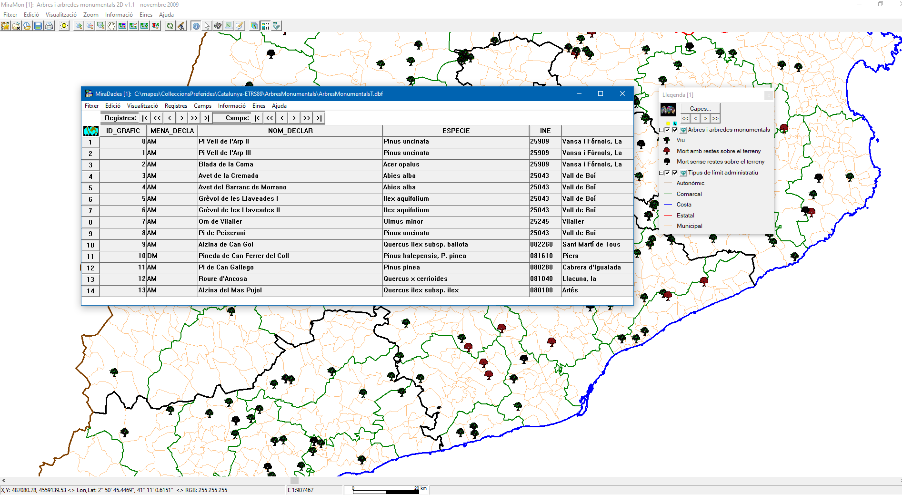

-
 MiraDades: View and edit Databases Tables
MiraDades: View and edit Databases Tables
MiraDades: View and edit Databases Tables| Presentation | Graphic examples |
| Syntax |
MiraDades is a database table viewer and DBF table editor. It is a Windows application developed as part of MiraMon. The application is easy to use because it provides a spreadsheet-like interface, where rows represent table records and columns represent table fields.
The application is very small (approximately 2 MB) and is distributed in 32-bit and 64-bit versions. MiraDades can handle very large tables with numerous fields and records (more than 200,000 records), even on low-powered computers.
MiraDades allows users to edit the contents of DBF tables, restructure fields or records, sort tables, perform physical joins, and carry out basic table operations commonly used in geographic information systems.
DBF tables (with the .dbf extension) were defined by dBASE many years ago and have become somewhat less common in recent years, making it difficult to find suitable editing tools. Nevertheless, the ESRI Shapefile (SHP) format, still one of the most popular formats in the GIS industry, requires DBF tables to store thematic attributes. MiraMon also uses them for alphanumeric attribute tables in its structured vector formats, thesaurus tables, and color palettes.
MiraDades supports tables in dBASE III+ and dBASE IV formats (dBASE later developed a dBASE V format that was not particularly successful and is not supported). The dBASE IV format is limited to 256 fields per table and field names consisting of 10 uppercase letters. MiraDades supports field types C, N, D, and L (for text, numbers, dates, and logical values, respectively). MiraDades also supports a new format (defined by the MiraMon group) called Extended DBF, which overcomes these limitations (allowing a virtually unlimited number of fields-approximately 13.4 million-and a virtually unlimited length-2.1 billion single-byte characters-for 'C' fields, which store character or text data). This format is supported by MiraMon but not by the SHP format. Extended DBF files also use the .dbf extension, but MiraDades can distinguish them from standard DBF files. MiraDades can also be used exclusively with the dBASE IV format.
MiraDades recognizes ANSI/OEM/UTF-8 character encodings used in the text fields of DBF tables and allows conversion between these encodings.
It supports operations on fields, records, etc. (creation, sorting, and more), which can be performed through MiraDades dialog boxes or automated for large-scale calculations using command-line calls to the GestBD application.
Another noteworthy feature of MiraDades is its ability to perform regression analyses, including simple and multiple linear and quadratic regressions, between table fields. These regression analyses can also be automated from the command line. Regression analysis provides the correlation coefficient (R), the coefficient of determination (R2), RMS (optional), mean error, Fisher's F-statistic for the fit (in the case of a perfect fit, 1+E30 is returned to simulate "infinity"), the calculated significance level for the F-statistic, the intercept, the coefficients of the independent variables, and more.
Relationships between tables are managed through the freely distributed Universal Geospatial Metadata Manager (GeM+).
Although MiraDades' native format is DBF, the program can access any database, including MS-ACCESS, ORACLE, SQL Server, DB2, and other tables such as EXCEL spreadsheets. To access these tables, MiraDades uses ODBC technology, which is included in Windows and requires a driver for each format (the MS Office suite includes several ODBC drivers for common formats). However, MiraDades retains the ability to directly view and edit DBF tables, a feature already available in previous versions. For more information about database access in MiraMon, see Databases in MiraMon.
MiraDades is distributed free of charge and requires no installation (it can run from any folder to which it is copied, a USB flash drive, etc.). It also works offline, making it useful when an Internet connection is unavailable.

 |
| Example of viewing and editing the database table of monumental trees and groves in Catalonia using MiraDades. |
MiraDades supports several command-line parameters. These parameters are useful for launching MiraDades from a console or DOS window, or from other programs. The parameters can be used in any order, although some combinations may not make sense. Parameters must be separated by one or more whitespace characters (spaces or tabs).
The most commonly used parameter is the name of the DBF table or database file. For example, you can run:
MiraD C:\Mapes\Portugal\TrensA.dbf MiraD \\SERVIDOR\BaseDades\Poblacio\1995.mdb
/EDIT Opens a DBF table in edit mode, as if F2 had been pressed (currently, this parameter only applies to DBF tables).
/SQL=CREATE... Creates a table with as many fields as defined in the statement. For example, given an existing database named C:\Hola.mdb, the following statement creates a new table named TaulaActivitats with two fields. MiraD "/SQL=CREATE TABLE TaulaActivitats (CodiActivitat VARCHAR(50), Any INT)" "C:\Hola.mdb".
/SQL=INSERT... Inserts records into a database table. For example, given an existing database named C:\Hola.mdb containing a table named TaulaActivitats, the following statement inserts a record with two fields. MiraD "/SQL=INSERT INTO TaulaActivitats (CodiActivitat, Any) VALUES ('08-78//12', 2005)" "C:\Hola.mdb".
/XERRAIRE Allows the program to display certain unnecessary messages for debugging purposes. Additionally, if an MM32 session was launched with /XERRAIRE, any MiraD sessions launched from that session will also use /XERRAIRE.
When command-line calls such as /SQL=CREATE..., /SQL=INSERT..., etc., are used, MiraDades closes automatically once the specified operation has been completed.
In SQL statements passed to MiraDades through the command line, if a '/' character is required in the statement, it must be written as "//" to prevent the operating system's command-line interpreter from treating it as the start of a new parameter separated by '/'. If a '"' character is required in the statement, it must be written as "¨" or character 127 to prevent the operating system's command-line interpreter from interpreting the quotation marks as the end of the command-line parameter.
The syntax for performing regression analysis from the command line uses the following switches, in addition to the name of the DBF table containing the fields of interest for the analysis:
/VAR_DEP= Name of the field that serves as the dependent variable (Y).
/VAR_INDEP= Name of the field or fields that serve as the independent variable or variables (X or X1, X2...). When multiple fields are specified, they must be enclosed in square brackets, with no spaces between them, for example, "[Distance to sea][Elevation][Latitude]". A closing square bracket can also be used as a field separator (similar to a comma): "Distance to sea]Elevation]Latitude]".
/AJUST= Type of fit (L for linear, simple or multiple; Q for quadratic).
/CALC_RMS Includes the RMS calculation in the results.
/ALFA= Desired significance level for the analysis. The default value is 0.05.
/ID_ENT= Field containing the entity identifier for each sample. This is useful for identifying any point in the output graph (typically unusual values or outliers).
/PES= Field providing the weight of each sample. If not specified, all records (samples) are assigned equal weight in the regression analysis.
/INFORME= Name of the file containing the resulting statistical report. The program prefixes this name with the decimal digits of R2 and the letters SS for "Statistically Significant" or NS for "Not Significant".
/OBRIR_INFORME Opens the text report immediately after the regression analysis.
/X_Y_SIMILAR Forces the graph to use equivalent X and Y dimensions, which is useful when the slope of the resulting function (or the relationship between observed and expected values in multiple regression) is very steep or very flat.
/OBRIR_GRAFIC Opens the graph immediately after the regression analysis. For simple linear and quadratic regression, the generated graph uses X=independent and Y=estimated_dependent. For all other cases (multiple linear regression), the graph uses X=observed_dependent and Y=estimated_dependent. The graph opens in a MiraMon session where the reference system is defined by the XY data (for simple regression) or by the observed and expected values (for multiple regression). The DBF table containing the analysis fields is not displayed again until the MiraMon session is closed.
Please refer to the description of the /DT= parameter in the general syntax for more information.